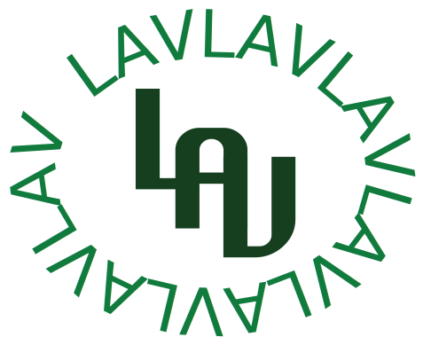

This Logo Subpage is by Lauren Valenzuela

For this assignment in Journalism and Design Toolkit, I wanted to create a logo that
would be purposeful for multiple things. I wanted to create a logo that is versatile in
so I could place it on resumes, invoices, emails, and more!
For the logo itself, I used my first, middle, and laste name initials while sticking with
a single color palette to speak true to my own style. In addition, I was also able to
manipulate the lettering by adjusting how each letter lined up in order to make it
logo-like and seamless in its design.
this website is coded by hand, but you can find the source code of the project
To navigate back to my homepage, click here ⬅️